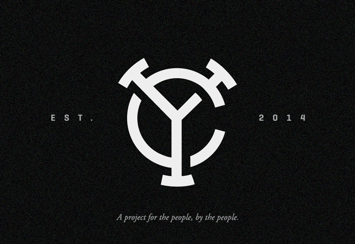
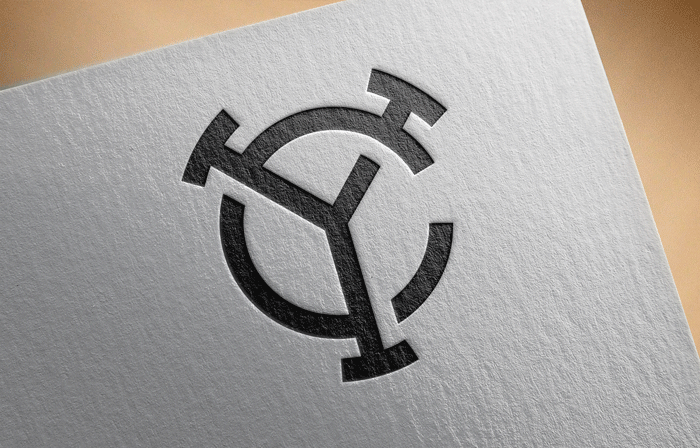
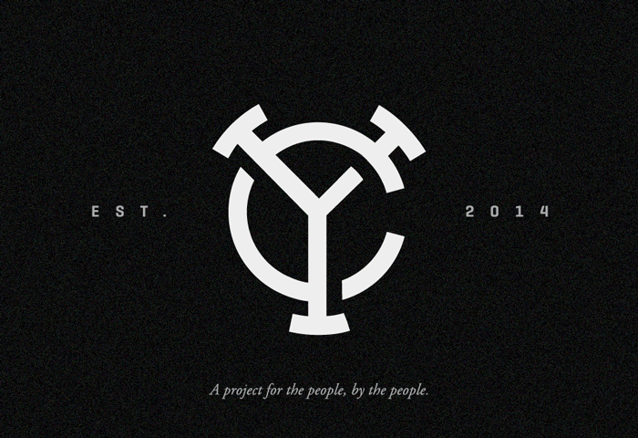
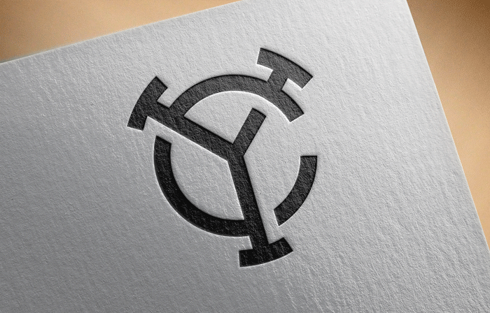

Young Creatives
Stories about creativity, talent and people
The Problem:
My good buddy and great producer Grant Lemons approached me in 2014 with an idea to showcase promising young college students. He wanted to make short profile videos for a select group of students with the intent of following back up in a few years to see where everyone went. He needed a brand and a site that showcased the videos and bios.
The Solution:
A minimalist monogram that can withstand the test of time. To be fair, this project is really about exploring our own aesthetics and just having fun. We are both just trying to make stuff we love. This project has been a fun way to explore, try new things and just make stuff without restrictions. Although I'm deeply passionate that form follows function, it's refreshing to throw out fuction and just design.
 



Early Explorations:
Here's some early designs and process. Ended up going in a different direction, but ya know.
Website:
This is an ongoing project, but we're hoping to launch in May. Check back soon for the completed site, but here's some inital exploration we've been working on.